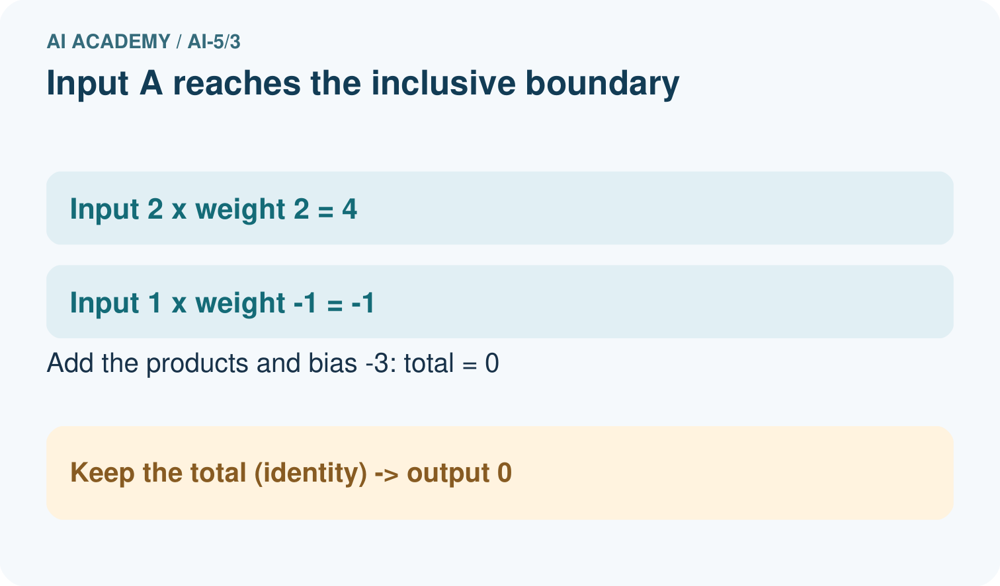
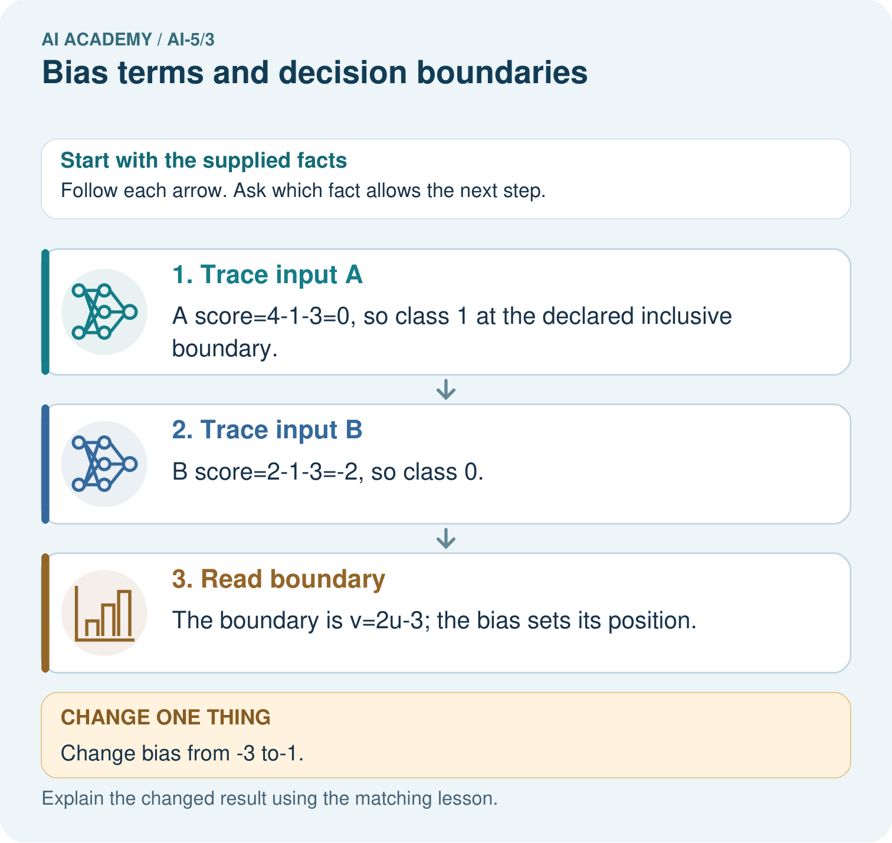
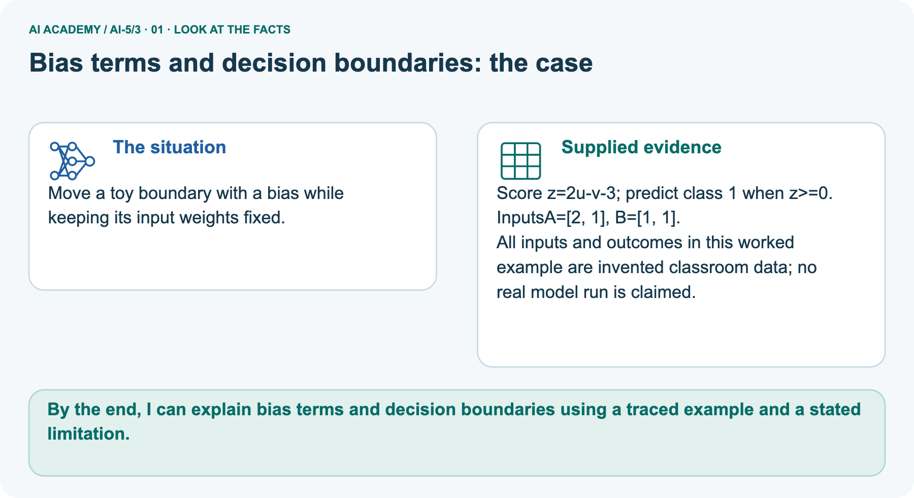
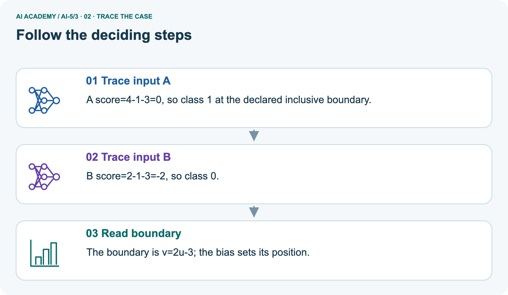
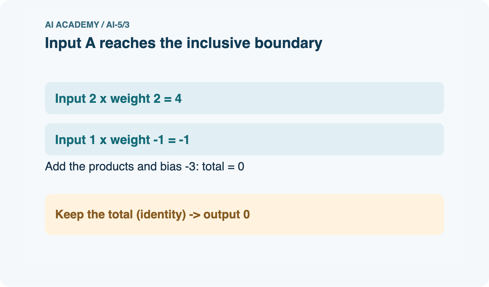
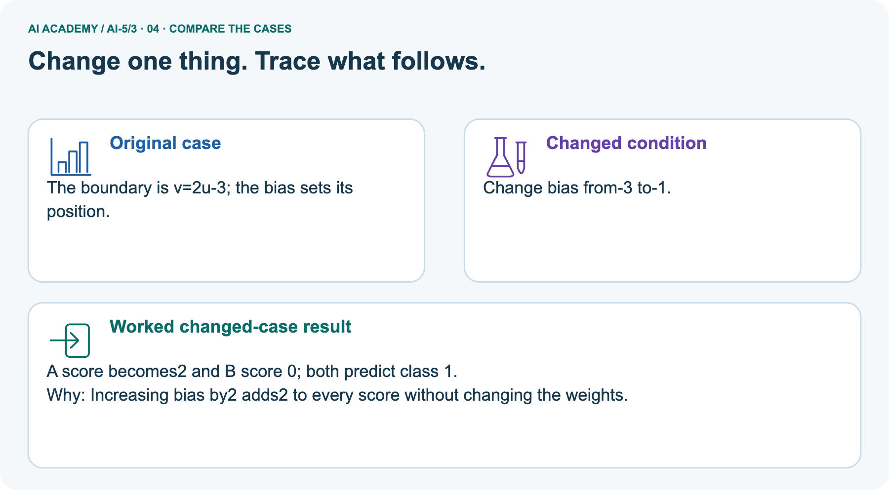
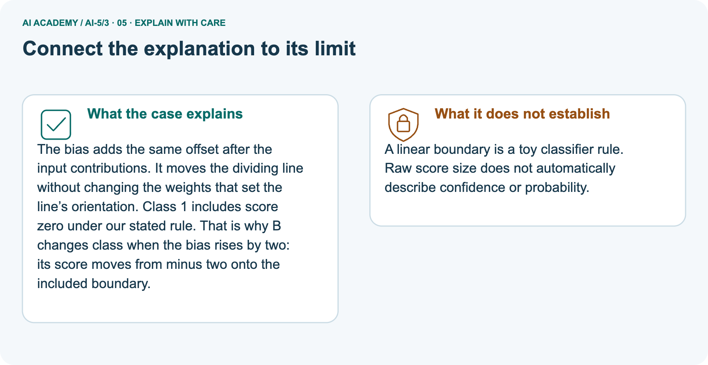
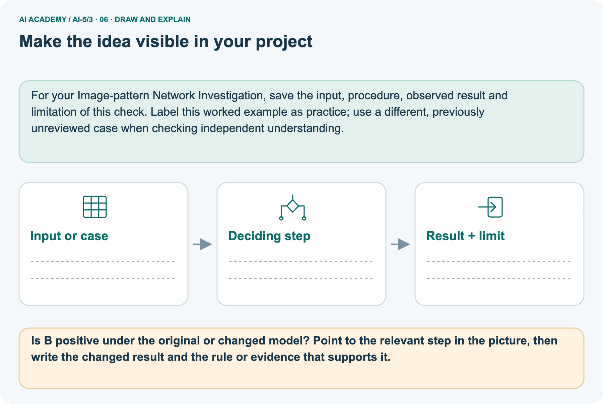

AI Academy · Level 5 · Grade 10 · Week 3 · Teacher guide
Bias terms and decision boundaries
Learn to understand, design, build, test and explain AI systems responsibly.
Project: Image-pattern Network Investigation
Teacher guide · 1 of 9
Prepare the purpose, prerequisites and materials
Prepare Bias terms and decision boundaries: check the target, prerequisites, resources and adaptable teaching schedule.
Teach the learning cycle
Primary target: Calculate a weighted score with a bias term
| Session | Sequence and minutes | Resources |
|---|---|---|
| Session 1 · Understand · 45 min | 0–7: recall and prerequisite; 7–15: inspect the concrete case and predict; 15–30: teacher models the worked trace; 30–40: learners explain a step using the text and visual; 40–45: check the core idea. | Sections 1–6; record the brief recall in the workbook. |
| Session 2 · Practise · 45 min | 0–5: retrieve the procedure; 5–15: W2 completion practice; 15–23: explain and check with a partner; 23–30: each learner answers the misconception check; 30–40: targeted reteaching or a harder variation; 40–45: prepare the investigation. | Sections 7–10; use the matching workbook W2 and misconception check. |
| Session 3 · Investigate and transfer · 45 min | 0–5: retrieve the decision rule; 5–20: investigate or trace; 20–30: start the independent case; 30–38: connect the project; 38–43: act on feedback; 43–45: plan the return check. | Sections 9 and 11–14. Give extra time to finish the full task set; use Section 15 when the week includes a coding lab. |
This is a starting allocation of 135 minutes, not a validated duration. Preserve all named topics. Schedule extra time for connected examples, the full investigation, independent cases and project building.
Repeated copies of a case share one recorded attempt; they are not new evidence.
Retrieval answer guidance
Dot products and weighted sums
Without opening the old lesson, explain one key idea from Dot products and weighted sums. Give an example and a mistake that the idea helps you avoid.
Look for: Calculate a dot product by matching feature positions
Reference example, not the only acceptable wording: Teacher explanation: Contributions are 6 and -5, so the score is 1.
Use two 45-minute sessions to connect signed arithmetic, linear equations and graph regions. Require the explicit equality policy each time.
The classroom formula is hand-selected; it demonstrates prediction and parameter effects, not evidence of successful training.
Outcomes
Calculate a weighted score with a bias term
Locate and test a two-feature decision boundary
Explain how changing the bias shifts a boundary without training
Preparation
Printed lesson and workbook; paper and pencil
Calculator and optional local Python 3 editor; no packages or AI accounts needed
Use the fictional examples supplied; prepare the fresh retry before class
Prerequisite answer
The contributions are 6 and -5, giving dot product 1.
End goal for the pictorial case
By the end, I can explain bias terms and decision boundaries using a traced example and a stated limitation.
This added worked case illustrates the week’s main idea. Retain all original and connected topics; schedule its practice within the teaching cycle.
Teacher guide · 2 of 9
Explain and model the mechanism
Model Bias terms and decision boundaries using the supplied case, labelled mechanism and reasoning. Make the scope of each conclusion explicit.
Use the fictional parcel schema [width in cm, height in cm]. Our model computes z = 2 times width - height - 3. The weights are [2, -1]; the bias b is -3. Compute the weighted sum first, then add the bias once.
The result is an affine score: a weighted sum plus a constant offset.
Explain Bias terms and decision boundaries · 1
Now declare a classification rule: predict class 1 when z is at least 0, and class 0 when z is below 0. Equality belongs to class 1. These are invented categories for arithmetic practice, not a real parcel decision.
The weights and bias are supplied, so this is a forward calculation, not training.
A bias is a mathematical parameter. It is not the same use of the word as unfair treatment; numerical offset alone does not establish whether a system is fair.
Set z to zero to locate the boundary: 2 times width - height - 3 = 0, so height = 2 times width - 3. Plot width on the horizontal axis and height on the vertical axis. Boundary points include (2, 1), (3, 3) and (4, 5).
Join them with a straight line and label the axes in cm.
At width 3, height 2 gives score 1 and class 1; height 3 gives score 0 and class 1; height 4 gives score -1 and class 0. Under this axis convention class 1 lies on or below the boundary.
One point on each side checks that orientation.
The code assumes valid numerical measurements in the agreed units. Changing >= to > changes the equality case, even though the drawn line remains in the same place.
| Term | Meaning |
|---|---|
| Bias term | An additive parameter applied after a weighted sum |
| Decision boundary | Input locations where the declared classification rule changes class |
| Affine function | A weighted sum plus a constant offset |
| Threshold rule | A stated comparison that converts a score into a class |
Hold the weights fixed while shifting the boundary
Explain Bias terms and decision boundaries · 2
Guided [3, 4]: with b = -3, z = -1 and class 0; with b = -1, z = 1 and class 1. Only b changed. Exit: test labels influenced the new bias, so the reused cases are development evidence for the revision.
Preserve the original result and evaluate a frozen revision on fresh independent cases.
Model the reasoning aloud
Use the complete worked example below before asking learners to complete W2. Reveal a small part, invite a prediction, then explain the deciding step.
These teacher notes contain solutions; do not reveal the independent case answer during modelling.
Hold the weights fixed while shifting the boundary
| Thinking move | Teacher prompt |
|---|---|
| Plan | What is given? What is the question? Which procedure fits these facts? |
| Do | Point to each input and intermediate step in the worked trace. Name the rule that allows the next step. |
| Check | Does the output answer the question? Which assumption or limitation prevents a larger claim? |
Use the diagram and verbal explanation together. Ask learners to match a sentence to a specific visual step; do not assign learners fixed visual or auditory learning styles.
A pictorial worked case: Bias terms and decision boundaries
Move a toy boundary with a bias while keeping its input weights fixed.
The facts we will use
Supplied facts
Score z=2u-v-3; predict class 1 when z>=0. InputsA=[2, 1], B=[1, 1].
Supplied facts
All inputs and outcomes in this worked example are invented classroom data; no real model run is claimed.


Read the picture one step at a time
Why this result follows
Why the result follows
The bias adds the same offset after the input contributions. It moves the dividing line without changing the weights that set the line’s orientation. Class 1 includes score zero under our stated rule.
That is why B changes class when the bias rises by two: its score moves from minus two onto the included boundary.
What this example does not establish
Keep the stated limit
A linear boundary is a toy classifier rule. Raw score size does not automatically describe confidence or probability.
Change one thing in the pictured case
Change one thing
Change: Change bias from-3 to-1.
Predicted result
Prediction: A score becomes2 and B score 0; both predict class 1.
Why the result follows
Reason: Increasing bias by2 adds2 to every score without changing the weights.
Ask while showing the picture
Ask while showing the picture · 3
Cover the result. Ask learners to name the inputs and predict the next step. Uncover one step, connect the icon to the actual procedure, and explain its evidence. Then change the supplied condition and compare.
The picture is a representation; it does not document execution of a real AI model.
Teacher guide · 3 of 9
Demonstrate and guide practice
Demonstrate Bias terms and decision boundaries, reduce support deliberately and check individual reasoning before discussing answers.
| Time or stage | Teacher action |
|---|---|
| Session 1 start to 7 minutes | Retrieve the dot product in the prerequisite question and review adding a negative constant. |
| 7 to 18 minutes | Trace all three table rows. Students circle the one addition of b and identify the equality case. |
| 18 to 32 minutes | Complete W1 and derive height = 2 width - 3. Plot the three boundary points on labelled axes. |
| 32 to 45 minutes | Use W2 and the guided bias comparison. Check both sides numerically before shading a class region. |
| Session 2 start to 8 minutes | Retrieve the rule z >= 0. Run or trace the optional code and compare it with the plotted points. |
| 8 to 20 minutes | Complete W3. Distinguish moving the boundary from changing the class assigned at equality; discuss the extended origin. |
| 20 to 35 minutes | Collect W4 independently. Check scores, classes, rearranged equation and the effect of changing only b. |
| 35 to 45 minutes | Complete W5 and the exit response. Offer the fresh retry after feedback to assess the same ideas with a new boundary. |
Use the worked example in Sections 3 and 6. Collect a prediction before revealing its result; ask the learner to point to each intermediate fact.
Provide graph paper and a partially labelled contribution table. If rearranging equations is difficult, find three zero-score points by substitution first.
Extension: multiply all weights and b by positive 2 and explain why scores double while classifications under >= 0 stay the same.
Reduce help deliberately
Completion practice
Completion task: For the worked model, find boundary points at width 2 and width 4. Test [4, 4] and [4, 6] to identify the class on each side.
Reasoning to listen for
Teacher check: Teacher explanation: Boundary points (2, 1) and (4, 5). [4, 4] has z = 1 and class 1; [4, 6] has z = -1 and class 0. With height vertical, class 1 is on or below the line.
Start by identifying the given inputs together. Leave the intermediate steps blank. If needed, model one step, then withdraw that help on the next step. Move to a full trace only when the partial trace is understood.
For partners, alternate explainer and checker; collect a response from every learner before discussion.
Individual reasoning check
Use the worked case for Bias terms and decision boundaries. Proposed explanation: “Add bias to each contribution”. Decide whether this explanation is supported.
Point to the step or supplied fact that decides; explain your repair if needed.
Expected repair
Expected correction: Compute the dot product, then add one b. Adding b twice implements a different formula.
Collect explanations, not only yes/no votes. If a misunderstanding is common, re-model the relevant step for the class.
If it affects a few learners, give a short targeted group explanation while others solve a more demanding variation.
Pictorial practice question
Is B positive under the original or changed model? Point to the relevant step in the picture, then write the changed result and the rule or evidence that supports it.
Reasoned teacher answer
Originally B has score-2 and class 0; with bias-1 its score is 0 and class 1 because the boundary is inclusive. Changed-case check: A score becomes2 and B score 0; both predict class 1.
Increasing bias by2 adds2 to every score without changing the weights.
Changed-case reasoning: A score becomes2 and B score 0; both predict class 1. Increasing bias by2 adds2 to every score without changing the weights.
Collect each learner’s explanation before discussion. Use the first missing connection between input, deciding step and result to choose support. This question is worked-case practice, not fresh mastery evidence.
Teacher guide · 4 of 9
Run the investigation and diagnose misconceptions
Run the Bias terms and decision boundaries investigation and use the first unsupported step to choose a teaching response.
Add bias to each contribution: Compute the dot product, then add one b. Adding b twice implements a different formula.
Higher scores mean more correct: Correctness also needs target labels. A shifted boundary can trade one error type for another.
The bias term measures unfairness: This b is an additive parameter. Evaluating unfairness requires context and evidence about outcomes and use.
Use Section 9 for the evidence ledger. Add a boundary or missing-input case and record the expected response before checking. More successful repeats of one case do not establish wider coverage.
Match the support to the first error
| What the response shows | Next teaching action |
|---|---|
| Missing or misread facts | Read the case aloud, mark supplied versus unknown facts, and let the learner restate it. |
| Wrong procedure | Return to the deciding step in the worked case. Contrast it with the proposed incorrect explanation. |
| Arithmetic or implementation error | Trace intermediate values or lines; preserve the first mismatch and retry that step. |
| Correct result without a reason | Ask for a trace and a changed case before marking independent understanding. |
| An unsupported wider claim | Ask which supplied evidence supports the claim and which further observation would be needed. |
Offer an oral explanation, drawing, enlarged visual or fewer examples when that removes a reading/writing barrier. Keep the same reasoning goal.
Stretch secure learners by changing a boundary or assumption and asking them to defend the effect, not simply by assigning more of the same questions.
Teacher guide · 5 of 9
Assess and explain the answers
Use the Bias terms and decision boundaries questions, teacher keys and criteria after the relevant attempts. Previously discussed cases are practice; protect the separately selected independent task.
Guided and exit questions
Guided [3, 4]: with b = -3, z = -1 and class 0; with b = -1, z = 1 and class 1. Only b changed. Exit: test labels influenced the new bias, so the reused cases are development evidence for the revision.
Preserve the original result and evaluate a frozen revision on fresh independent cases.
W1 Trace the bias once
Workbook question · W1
Use z = 2 times width - height - 3 at [5, 4]. Give the weighted sum, bias, final score and prediction under z >= 0.
Teacher reasoning · W1
Teacher explanation: Weighted sum 10 - 4 = 6; bias -3; score 3; prediction 1. Add the bias once after summing.
W2 Plot and label the boundary
Workbook question · W2
For the worked model, find boundary points at width 2 and width 4. Test [4, 4] and [4, 6] to identify the class on each side.
Teacher reasoning · W2
Teacher explanation: Boundary points (2, 1) and (4, 5). [4, 4] has z = 1 and class 1; [4, 6] has z = -1 and class 0. With height vertical, class 1 is on or below the line.
W3 Check the equality rule
Workbook question · W3
At [3, 3], compare prediction under z >= 0 with prediction under z > 0. Does changing this comparison move the zero line?
Teacher reasoning · W3
Teacher explanation: Score is zero. The >= rule predicts 1; the > rule predicts 0. The zero line remains height = 2 width - 3, but its assigned class changes.
W4 Analyse a new model independently
Workbook question · W4
A new model has w = [-1, 2], b = -2, inputs [u, v] and class 1 when z >= 0. Calculate scores and classes for [2, 1], [2, 2], [2, 3]. Write the boundary as v in terms of u. Then change only b to 0 and recompute [2, 1].
Teacher reasoning · W4
Teacher explanation: Scores -2, 0, 2 give classes 0, 1, 1. Boundary -u + 2v - 2 = 0 gives v = u/2 + 1. With b = 0, [2, 1] scores 0 and class 1. The score rose 2 and the boundary moved to v = u/2.
W5 Require evidence of improvement
Workbook question · W5
A teammate says that raising b must improve the model because all scores rise. What information is needed before accepting an improvement claim?
Teacher reasoning · W5
Teacher explanation: Higher scores can fix some missed class-1 cases while creating false alarms.
Compare with observed labels on the same valid evaluation set under a declared metric, keeping fitting and model choices separate from final testing.
Independent assessment and fresh retry
Teacher key · Independent assessment and fresh retry
W4 should include all three scores and the equality class, with v = u/2 + 1 before the change. Fresh retry: z = u + v - 5, class 1 if z >= 0. [2, 2], [2, 3], [2, 4] give -1, 0, 1 and classes 0, 1, 1; boundary v = 5 - u.
With b changed from -5 to -4, [2, 2] reaches zero and class 1.
Assess independent transfer
Independent question · withhold the key
Selected case: A new model has w = [-1, 2], b = -2, inputs [u, v] and class 1 when z >= 0. Calculate scores and classes for [2, 1], [2, 2], [2, 3]. Write the boundary as v in terms of u.
Then change only b to 0 and recompute [2, 1].
Selected case answer
Teacher key · Selected case answer
Teacher explanation: Scores -2, 0, 2 give classes 0, 1, 1. Boundary -u + 2v - 2 = 0 gives v = u/2 + 1. With b = 0, [2, 1] scores 0 and class 1. The score rose 2 and the boundary moved to v = u/2.
| Dimension | Evidence required |
|---|---|
| Explanation | Names the applicable idea or procedure and ties it to the supplied facts. |
| Trace and result | Preserves the given inputs and shows the relevant intermediate steps; distinguishes a prediction from an observed execution. |
| Limits | States the assumptions, missing evidence or conditions under which the result would change. |
Teacher key · Selected case answer
Record each dimension as not yet, with support, or independent. Accept a valid alternative procedure with a defensible trace.
Do not penalise an honestly recorded model failure if the learner correctly explains its evidence and limits.
Feedback that the learner uses
Name the earliest unsupported step and give one action to repair it. Have the learner make that repair now and explain why. Then assess the relevant skill on a fresh, fully specified case.
Confirm it was not previously practised with feedback; solve and check the new case before assigning it. A follow-up design prompt is a starting brief, not automatically an equivalent test.
Teacher guide · 6 of 9
Connect the project, support and next lesson
Connect Bias terms and decision boundaries to Image-pattern Network Investigation, adapt support and plan a later changed-case check.
Add a labelled bias terms and decision boundaries evidence sheet to Image-pattern Network Investigation. Show how you can calculate a weighted score with a bias term.
Use the supplied fictional case and keep its inputs, intermediate steps, calculation or prediction, and limitation. Connect this record to last week’s record; a matching answer without a trace is insufficient.
Provide graph paper and a partially labelled contribution table. If rearranging equations is difficult, find three zero-score points by substitution first.
Extension: multiply all weights and b by positive 2 and explain why scores double while classifications under >= 0 stay the same.
Week 4 compares identity, ReLU and sigmoid transforms of the score.
Retain the project ledger and assess a changed case after support. Check the relevant prerequisite before carrying this component forward.
Plan the delayed return
Suggested return points in this level: ai-5/4, ai-5/6, ai-5/9. Use actual classroom dates, adjusting for holidays and gaps. One, three and six teaching weeks are scheduling choices, not a claimed optimal spacing.
At a delayed check, ask for the idea from memory and a changed application. Compare with the earlier independent response and record support used.
For a new level, revisit the previous capstone before checking the new prerequisites.
| Record | Teacher evidence |
|---|---|
| Learner code and date | |
| Concept and case used; prior exposure | |
| Explanation / trace / limits | |
| Support and first repair | |
| Changed case and delayed outcome | |
| Next teaching action |
Use the evidence to choose reteaching or the next step. A completed page, confidence rating or attractive project does not by itself demonstrate understanding.
Project evidence from this case
For your Image-pattern Network Investigation, save the input, procedure, observed result and limitation of this check.
Label this worked example as practice; use a different, previously unreviewed case when checking independent understanding.
Teacher guide · 7 of 9
Prepare, teach and assess
Use this preparation summary alongside the detailed Bias terms and decision boundaries lesson; it is a checklist rather than a replacement for the full sequence.
Teaching target
Teaching target: Calculate a weighted score with a bias term
Prepare the labelled worked-case picture, the matching workbook, fictional input cards and a place for individual responses. Check a local Python 3 environment before class; have a paper-trace version ready.
| Session | Plan | Resources |
|---|---|---|
| Session 1 · Understand · 45 min | 0–7: recall and prerequisite; 7–15: inspect the concrete case and predict; 15–30: teacher models the worked trace; 30–40: learners explain a step using the text and visual; 40–45: check the core idea. | Sections 1–6; record the brief recall in the workbook. |
| Session 2 · Practise · 45 min | 0–5: retrieve the procedure; 5–15: W2 completion practice; 15–23: explain and check with a partner; 23–30: each learner answers the misconception check; 30–40: targeted reteaching or a harder variation; 40–45: prepare the investigation. | Sections 7–10; use the matching workbook W2 and misconception check. |
| Session 3 · Investigate and transfer · 45 min | 0–5: retrieve the decision rule; 5–20: investigate or trace; 20–30: start the independent case; 30–38: connect the project; 38–43: act on feedback; 43–45: plan the return check. | Sections 9 and 11–14. Give extra time to finish the full task set; use Section 15 when the week includes a coding lab. |
Before class, solve the supported practice: For the worked model, find boundary points at width 2 and width 4. Test [4, 4] and [4, 6] to identify the class on each side.
Supported practice answer
Reasoned practice answer: Teacher explanation: Boundary points (2, 1) and (4, 5). [4, 4] has z = 1 and class 1; [4, 6] has z = -1 and class 0. With height vertical, class 1 is on or below the line.
Check every learner before discussion: Use the worked case for Bias terms and decision boundaries. Proposed explanation: “Add bias to each contribution”. Decide whether this explanation is supported.
Point to the step or supplied fact that decides; explain your repair if needed.
Repair the misconception
Misconception repair: Compute the dot product, then add one b. Adding b twice implements a different formula.
Support without giving away the answer
Support: read the exact case aloud, enlarge the labelled picture, supply input cards and model only the first deciding step. Accept a spoken explanation or drawing; retain the reasoning goal.
Extend the reasoning
Extension: Change bias from-3 to-1. Require a prediction and a reason before comparing. Expected result: A score becomes2 and B score 0; both predict class 1.
Reason: Increasing bias by2 adds2 to every score without changing the weights.
Protect the independent attempt
Independent assessment: withhold the reserved answer until the learner has attempted the new case. Record support separately from correctness.
| Criterion | Not yet | With support | Independent |
|---|---|---|---|
| Explanation | Names an answer without a deciding fact | Uses a hint to link fact and decision | Explains the deciding fact in own words |
| Trace or test | Cannot connect input and result | Completes steps with prompts | Traces or tests a changed case accurately |
| Limits and revision | Claims more than evidence supports | Names a limit after a prompt | States a defensible limit and useful next test |
Project checkpoint
Project checkpoint: Frame the need. Name the user, the problem, allowed inputs and a safe simple starting method.
Use the weekly teacher answer for topic-specific reasoning. A saved progress tick is an activity record; judge mastery from the learner’s explanation and evidence.
Teacher guide · 8 of 9
Use feedback, labs and repair paths
Use feedback, earlier review and portfolios purposefully. Apply the coding routine only when this lesson has an executable lab.
Use the two formative questions as supported practice, not as independent mastery scores. Discuss the deciding evidence rather than accepting a guessed selection.
The feedback comes from the reviewed public worked case. Do not reveal the separately reserved independent teacher answer until the learner has attempted that case.
Ask students to predict before running code. Preserve errors and actual outputs; collect a changed test and an explanation. The branch-boundary and indexing lessons deliberately include failure cases.
Use the earlier worked-explanation links to address a specific missing building block, then return to the current question. Adapt this suggestion after observing the learner; it is not an automatic diagnosis.
Collect the completed-work portfolio as evidence. Record support separately from correctness, and assess explanation, trace/test and limitations. Progress ticks and quiz selections alone do not establish mastery.
Teacher guide · 9 of 9
Visual concept journey
Show one Bias terms and decision boundaries graphic at a time, request a prediction and discuss its trace before the independent assessment.
Use one picture at a time. Hide a worked result before asking for a prediction, then reveal it for feedback. These are supported teaching cases; retain the separate independent assessment for a fresh first attempt.
01. Bias terms and decision boundaries: the case

Move a toy boundary with a bias while keeping its input weights fixed. Supplied facts: Score z=2u-v-3; predict class 1 when z>=0. InputsA=[2, 1], B=[1, 1].
All inputs and outcomes in this worked example are invented classroom data; no real model run is claimed.
Point to the given fact that matters most. Explain why it matters.
Discuss while showing the picture
Teacher prompt: Point to the given fact that matters most. Explain why it matters. Ask learners to describe one label or arrow in ordinary words. Use the adjacent transcript if the image is difficult to see.
02. Follow the deciding steps

Trace input A: A score=4-1-3=0, so class 1 at the declared inclusive boundary. → Trace input B: B score=2-1-3=-2, so class 0. → Read boundary: The boundary is v=2u-3; the bias sets its position.
Point to each numbered stage and explain which recorded input it uses.
Discuss while showing the picture
Teacher prompt: Point to each numbered stage and explain which recorded input it uses. Ask learners to describe one label or arrow in ordinary words. Use the adjacent transcript if the image is difficult to see.
03. Input A reaches the inclusive boundary

Input A reaches the inclusive boundary. Inputs: [2, 1]; weights: [2, -1]; bias: -3; activation: identity; output: 0.
Read the labels and values. Explain the relationship the model shows.
Discuss while showing the picture
Teacher prompt: Read the labels and values. Explain the relationship the model shows. Ask learners to describe one label or arrow in ordinary words. Use the adjacent transcript if the image is difficult to see.
Check row/column meanings, units and denominators before discussing a difference. Supplied toy values are not real class or model results.
04. Change one thing. Trace what follows.

Original case: The boundary is v=2u-3; the bias sets its position. Changed condition: Change bias from-3 to-1. Expected result: A score becomes2 and B score 0; both predict class 1.
Reason: Increasing bias by2 adds2 to every score without changing the weights.
Predict before checking the worked changed-case result. Name what changed and what the supplied facts allow you to conclude.
Discuss while showing the picture
Teacher prompt: Predict before checking the worked changed-case result. Name what changed and what the supplied facts allow you to conclude. Ask learners to describe one label or arrow in ordinary words.
Use the adjacent transcript if the image is difficult to see. Changed-case reasoning: Increasing bias by2 adds2 to every score without changing the weights.
05. Connect the explanation to its limit

The bias adds the same offset after the input contributions. It moves the dividing line without changing the weights that set the line’s orientation. Class 1 includes score zero under our stated rule.
That is why B changes class when the bias rises by two: its score moves from minus two onto the included boundary. Limit: A linear boundary is a toy classifier rule.
Raw score size does not automatically describe confidence or probability.
Explain the case, then point to a limit on the claim.
Discuss while showing the picture
Teacher prompt: Explain the case, then point to a limit on the claim. Ask learners to describe one label or arrow in ordinary words. Use the adjacent transcript if the image is difficult to see.
Keep the stated scope: A linear boundary is a toy classifier rule. Raw score size does not automatically describe confidence or probability.
06. Make the idea visible in your project

For your Image-pattern Network Investigation, save the input, procedure, observed result and limitation of this check.
Label this worked example as practice; use a different, previously unreviewed case when checking independent understanding. Draw your input, deciding step, result and limit.
Supported question: Is B positive under the original or changed model? Point to the relevant step in the picture, then write the changed result and the rule or evidence that supports it.
Draw your project trace and justify the deciding step using evidence.
Discuss while showing the picture
Teacher prompt: Draw your project trace and justify the deciding step using evidence. Ask learners to describe one label or arrow in ordinary words. Use the adjacent transcript if the image is difficult to see.
Supported practice key: Originally B has score-2 and class 0; with bias-1 its score is 0 and class 1 because the boundary is inclusive. Changed-case check: A score becomes2 and B score 0; both predict class 1.
Increasing bias by2 adds2 to every score without changing the weights.